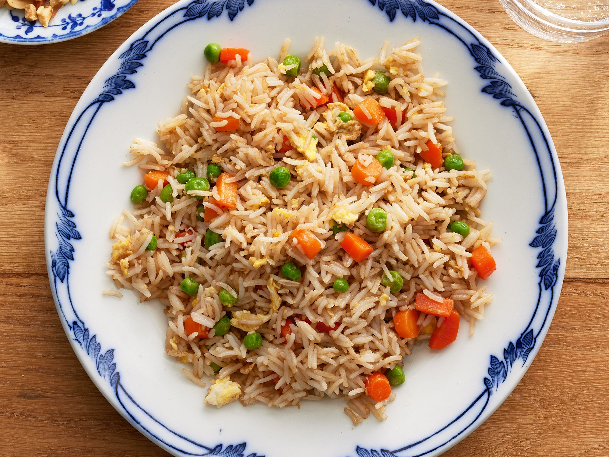

Fried Rice

What is Fried Rice
Fried rice is a traditional Chinese preparation of cooked rice, vegetables, protein, soy sauce, and aromatics. The ingredients are stir-fried in a large pan or wok for even flavor distribution. An ideal use for leftovers, fried rice is quick, customizable, and incredibly simple to put together with whatever is in your fridge.
Ingredients
- Rice
- Chicken
- Oil
- Soy Sauce
- Green Chilli Sauce
- Coleslaw raw veggie mix
Steps
- Boil the rice
- Boil chicken
- Shred the chicken
- Heat 2tsp of oil in the pan and fry the chicken
- Add some salt to the chicken and the 1 tsp of soya sauce and 2 tsp of green chilli sauce
- Once chicken is cooked, take them out and set them aside in bowl
- Add the rice in to the remaining oil and fry the rice
- Add 1tsp salt and add the veggie mix
- If you want it spicy add some extra chilli sauce (optional)
- Once rice is fried for few mins, add the chicken and mix the everything